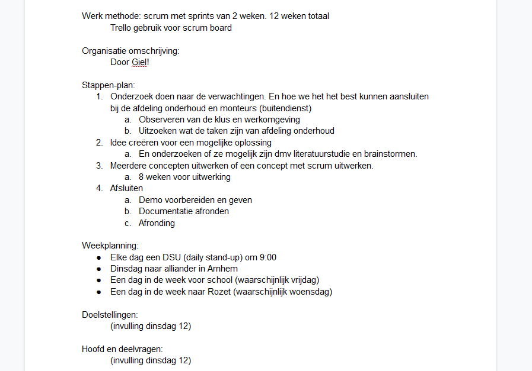
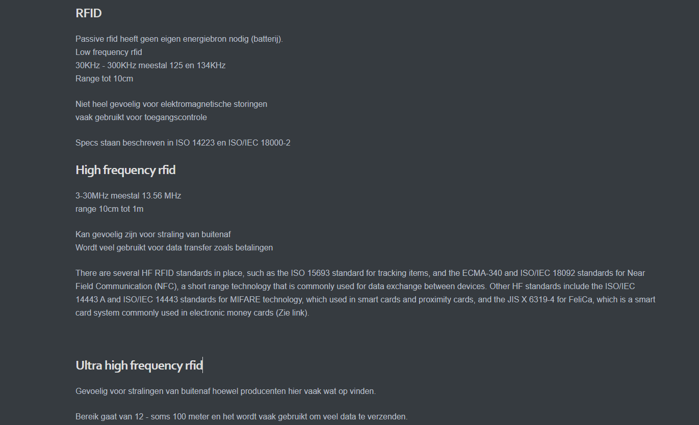
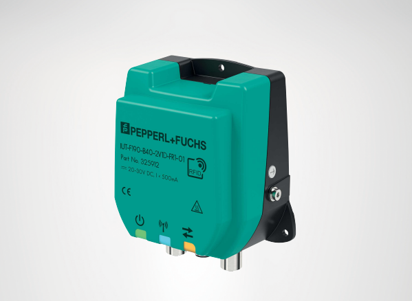
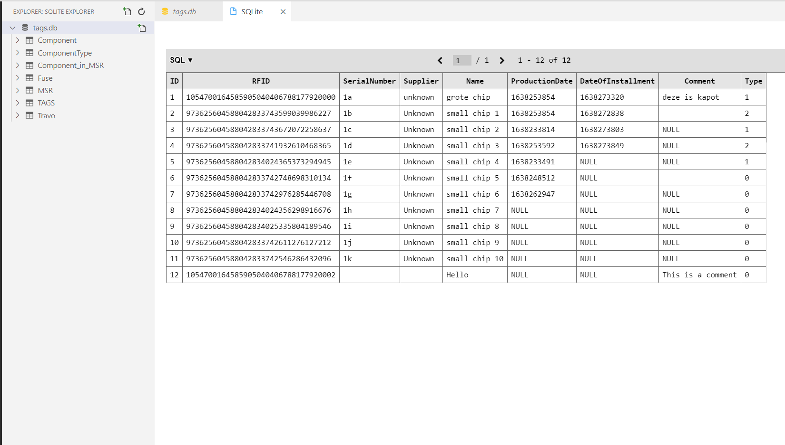
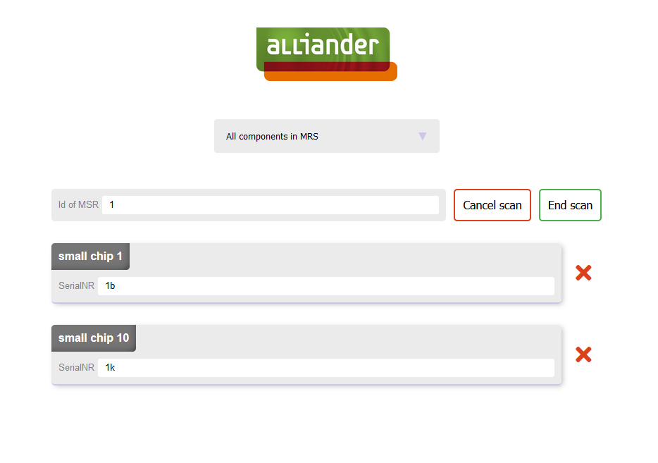
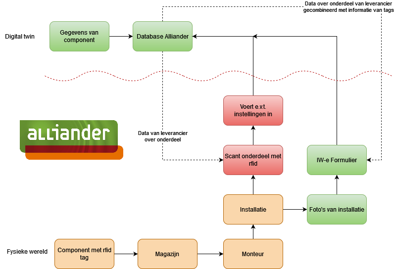
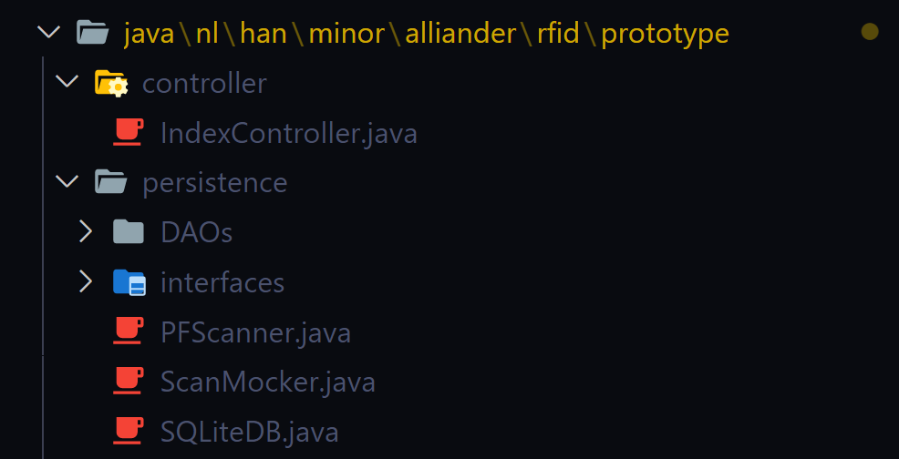
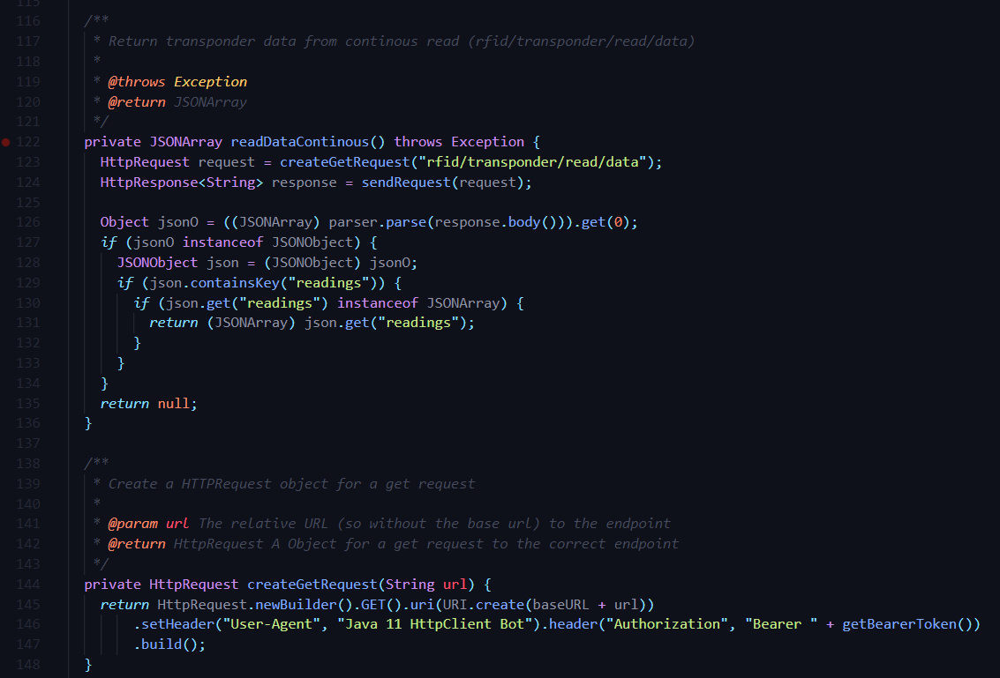
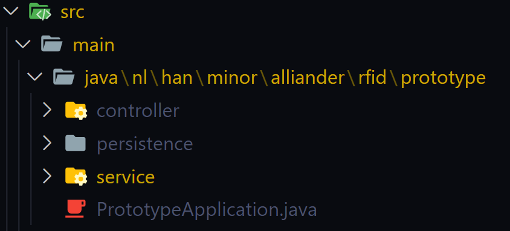
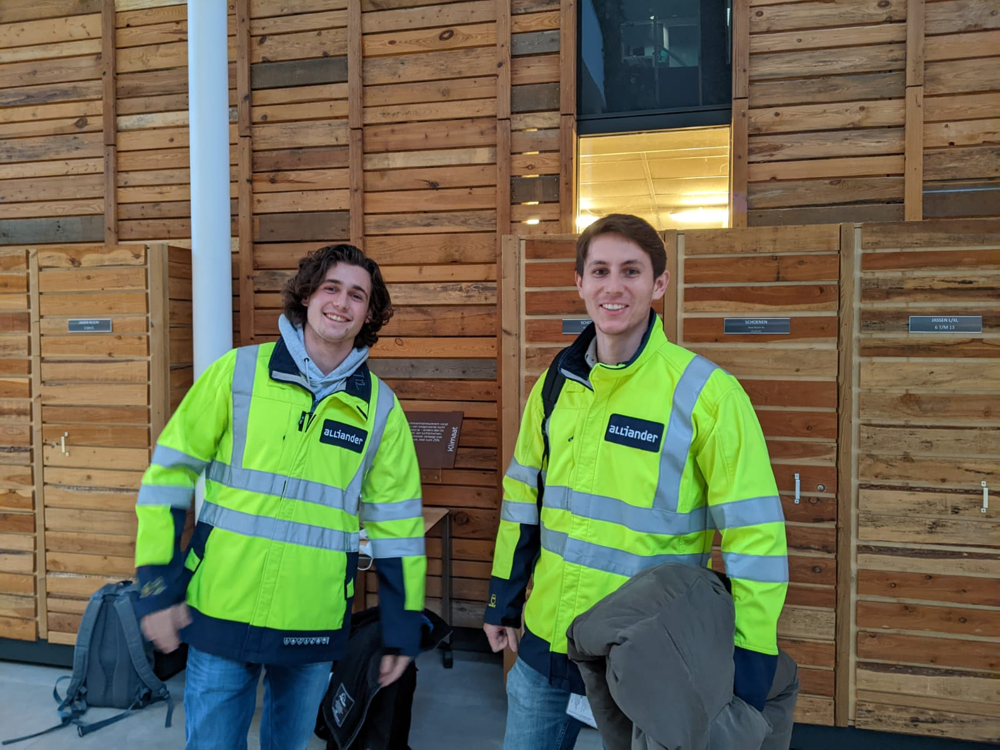

Alliander is mijn opdrachtgever geworden voor de opdracht tijdens de minor. Hierbij was ik ingedeelt met Ard van
Schoonhoven en Giel Simons. De opdracht was om te testen of het mogelijk was om met RFID het administratie process
te verlichten/automatiseren. Hierbij lag de nadruk op het administratieve process van MSR’s maar zou ook elders
toegepast kunnen worden.
Bewijsmateriaal

We hadden vooraf een plan van aanpak gemaakt om een structuur van de aankomende project weken te creëren.
Hierbij zouden we in sprints gaan werken van 2 weken en elke dag een DSU houden om 9 uur ‘s ochtends. Verder
zouden we eenmaal weeks een vergadering hebben met de opdrachtgevers om onze progressie te tonen en te
overleggen. Ook zouden we elke dinsdag op locatie zijn bij Alliander om effectiever te kunnen werken.
7 okt 2021
Onderzoek naar hardware & software
Om te beginnen met het maken van een werkend prototypen waarmee getest kan worden of RFID gebruikt kan worden
hebben we meerdere kleine onderzoeken gedaan om een goede basis te maken. Deze onderzoeken zijn voornamelijk
gemaakt met de literatuur onderzoeks methoden.
Bewijsmateriaal

Het eerste onderzoek waar we aan waren begonnen was het onderzoek naar mogelijke technologieën die we konden
gebruiken
voor de administratie. Hier kwamen we op 2 mogelijke kandidaten: RFID (specifiek UHF RFID) en visueel dmv QR-
of
barcodes. Dit onderzoek hebben we gedaan door eerst te kijken naar alle mogelijke technologieën die mogelijk
gebruikt
kunnen worden bij administratie van componenten. Na dit gedaan te hebben zijn we met z’n alle gaan kijken
naar de
voor- en nadelen van elke technologieën. Op deze manier konden we kijken welke het meest geschikt was voor
onze
toepassing.
We hebben uiteindelijk niet gekozen voor QR- of barcodes omdat Alliander dit al een keer had onderzocht en dit
was
niet ideaal.
13 okt 2021

Na gekozen te hebben voor UHF RFID zijn we gaan zoeken naar een stevige UHF RFID scanner die gebruikt kan
worden voor
lange duur en waar niet al te ingewikkeld mee gecommuniceerd kan worden met een door ons gemaakt programma.
We
hebben uiteindelijk gekozen voor een scanner van Pepperl+Fuchs gezien deze gemakkelijk aanspreekbaar was, het
bedrijf
dicht bij ons was waardoor verzendtijd niet te lang zou zijn. Verder was de reader ontworpen voor de industrie
en zou
dus niet snel kapot moeten gaan.
Ook dit onderzoek is gedaan met een literatuuronderzoek maar we hebben ook mensen gebeld van de bedrijven
om te
vragen naar advies en medewerkers van Alliander voor mogelijke informatie betreft UHF RFID scanners.
19 okt 2021

Om het adminstratieve process te digitalizeren hebben moesten we digitaal de data van het process opslaan. Dit
kan
gedaan worden met een database. Dus het was nodig om te gaan kijken naar mogelijke databases en andere opslag
methoden. Hiervoor heb ik mijn kennis toegepast van databases en heb ik een paar mogelijke kandidaten getest
die bij
het literatuuronderzoek naar voren gekomen zijn. Er is uiteindelijke gekozen voor de SQLite database.
Deze
gebruik SQL en is goed te gebruiken voor relatieve data. Dit betekend dat die goed aansluit bij het type data
dat er
opgeslagen moet worden en de kans groot is dat het ook goed aan te passen is bij een database die Alliander
zal gaan
gebruiken.
4 nov 2021

Het programma had ook een voorkant nodig waar de monteur mee zouden werken. Wij zouden dit alleen gaan bouwen
voor
demo einddoelen dus het kon allemaal relatief simpel blijven. Ik had twee methoden gevonden om deze front end
mee te
maken maar kwam er al snel achter dat het veel makkelijk was om Spring boot te gebruiken omdat ik hier al
ervaring mee
had.
10 nov 2021

Verder hebben we gekeken naar hoe ons programma ideaal zou moeten werken en hoe een monteur er mee om zou
gaan. We
kwamen hier op de volgende oplossing (Zie afbeelding hiernaast).
10 nov 2021
Software ontwikkeling
Om een echt werkende demo te geven moest er software gemaakt worden waar alle functionaliteiten die we wilde
demonstreren in waren opgenomen. Omdat ik de ICT opleiding volg had ik deze taak op me genomen.
Bewijsmateriaal

Om het programma te maken ben ik begonnen met het werkend krijgen van de drie losse onderdelen: de RFID
reader, de database waar de digital twins in opgeslagen worden en de frontend. Ik had al tijdens het testen
van databases een werkende manier gemaakt om met een SQLite database te communiceren via Java. Verder was het
niet heel moeilijk om een werkend frontend te maken gezien ik al ervaring had met Spring boot.
Wel had ik veel moeite met het werkend krijgen van de communicatie met de reader.
11 nov 2021

Zoals hierboven beschreven was het niet makkelijk om goed te communiceren met de reader. Dit kwam eerst
doordat een deel van het HTTP communicatie protocol niet goed geimplementeerd was in de scanner. Hierdoor was
het al heel lastig om de communicatie te starten. Dit was later wel gelukt met een omweg, alleen was het toen
bleek het niet mogelijk te zijn om op alle manieren (zoals omschreven in de documentatie van de scanner). Dit
bleek te komen doordat we een verouderde versie van de firmware op de scanner hadden. In deze versie was nog
niet alles geïmplementeerd door Pepperl+Fuchs. Na te vragen om een update bij Pepperl+Fuchs was het wel
mogelijk en na veel aanpassingen aan de code kon mijn programma met de scanner succesvol communiceren.
Tijdens deze situatie heb ik geleerd dat ik soms sneller hulp moet vragen aangezien ik te veel aan mezelf heb
getwijfeld wat veel tijd heeft gekost en het niet aan mij lag.
26 nov 2021

Voor het samenvoegen van de onderdelen die hiervoor beschreven zijn heb ik een layer pattern gebruikt.
Hierdoor zijn de losse onderdelen makkelijk van elkaar los te koppelen en zou Alliander bijvoorbeeld
gemakkelijk een andere scanner kunnen kopen en alleen de code aanpassen van de de scanner en de rest zal dan
blijven werken. Dit maakt het ook voor mij makkelijk om aan elk onderdeel los te werken zonder zorgen te maken
over hoe de andere hiermee gaan werken.
26 nov 2021
De uiteindelijke code die gemaakt is voor Alliander staat op mijn Github pagina. Deze is te zien als er op de
knop hiernaast gedrukt wordt.
5 jan 2021
Praktijk onderzoek bij alliander
Na het maken van (een groot deel) van de software hebben zijn we naar Liander gegaan om ons product in de praktijk
te testen. Deze test was niet volledig succesvol verlopen doordat de scanner codes ontving die niet aanwezig
zouden zijn. We zijn er niet achter kunnen komen waar deze nou vandaan zijn gekomen. Ze waren echter niet van ons.
Bewijsmateriaal

We kregen bij Liander we kleding om veilig in de buurt van MSR’s te zijn. Dit is te zien in de afbeelding
hiernaast. We gingen samen met twee collega’s naar twee verschillende MSR’s om te kijken naar een compacte MSR
en een die ruimer was opgezet.